Improve the elderlys' ability to age at home through understanding of daily activities inferred from passive sensor analysis.
The need for helping elderly individuals or couples remain in their home is increasing as our global population ages. Cognitive processing offers opportunities to assist the elderly by processing information to identify opportunities for caregivers to offer assistance and support.
Rather than depending on sensors worn on the body (and needing to be not forgotten, recharged, etc..) or installing sensors on individual devices (e.g. sink, cabinet, refrigerator, etc..), this solution utilizes passive monitoring devices, notably video camera(s) with multi-channel microphones, to sense activity, record events, and build a model of normative behavior.
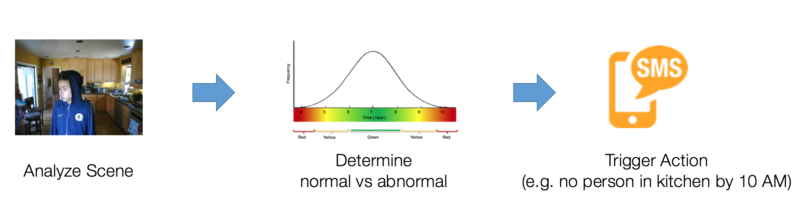
| Initially we intend to monitor the kitchen and recognizes the presence of a person (not an individual) in the room. From this simple event detection we will build a normative baseline of daily activity and detect when that daily activity exhibits aberrations (e.g. no activity in kitchen after +2 std. dev. past median time). The visual recognition algorithm will run on the local device (e.g. RaspberryPi with camera), the issues of round-trip latency to the cloud, or bandwidth required, or security or privacy concerns, will be eliminated. Only events generated from this recognition will be sent to the cloud to build (and update) the normative behavior model. This initial scenario may be easily extended to other passive monitoring capabilities, e.g. audio, motion (sonar), electrical circuit, , ... as well as deployment in other area, e.g. entry way, bathroom, hallway, etc.. to provide support for additional scenarios, e.g. medication adherence, diet, exercise, ... | 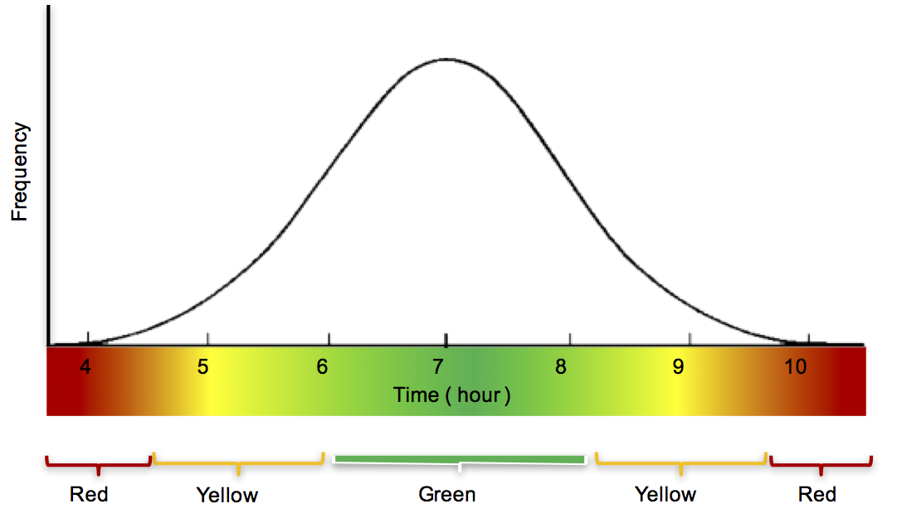 |
| Location | Date-Time |
|---|---|
| Kitchen |  |
| Bathroom |  |
The solution is patterned on a "do-it-yourself" (DIY) approach and utilizes inexpensive hardware, open source software, and free services from the IBM BlueMix cloud. The local device is comprised of a RaspberryPi computer and PlayStation3 Eye USB camera with four (4) internal microphones. Total cost of hardware is under US$80 on-line.

The IBM BlueMix cloud provides a suite of services for the application, including this Web site, which is a Node.js CloudFoundry application. The BlueMix environment enables this application context to apply to other services, notably the IBM Watson image recognition services. In addition, the Cloudant NoSQL repository stores the historical event and image recognition information.
BlueMix also provides the dashDB hybrid relational data warehousing service. This service automatically replicates from the Cloudant repository and provides an SQL interface for SELECT, PROJECT and JOIN. This SQL services can also be consumed by Watson Analytics and other third-party software packages from IBM and business partners (e.g. Looker).
Also on BlueMix, the IBM Internet of Things platform and associated Real-Time Insights provide device registration and system status monitoring for the RaspberryPi. General purpose conditionals can be applied for integration with email, IFTTT, Node.Red and arbitrary web-hook.
In addition, this site utilizes Mixpanel (www.mixpanel.com) and Intercom.io (www.intercom.io) to provide user tracking and near-line chat (n.b. look in lower right corner for chat icon).
With several weeks of data collected patterns are emerging. Initial analysis step was to understand the classsifiers tagged in the images.
Data was processed from JSON in Cloudant into CSV files for each device. Resulting data included listing of all classifiers by fifteen (15) minute interval per day.
These images are created using Watson Analytics. It is simple to get a free account and load the CSV files. Import these CSV files into Watson Analytics, refine the data model and explore yields the following graphical displays of the classifier space.

|

|

|
The heatmap of classifiers as well as the primary classifiers across hour of day were both highly informative. This insight lead the selection of the following classifiers from the VisualInsights recognition algorithms for further investigation using Looker.
Analysis of the underlying events which generated the classifications lead to analysis using Looker. Looker generates SQL for the dashDB replicant of the Cloudant JSON event history and then makes that output available for visualization and download as JSON. The following two graphics are "live" views of the rough-fog and damp-cloud events.
The same UNIX script
(mkclass)
that converts the Cloudant JSON into CSV files suitable to Watson Analytics is also suitable
for consumption by Excel.
The script builds the classifier (or classifier set, e.g. 'people') population statistics model for the specified device.
The results are processed in the Excel spreadsheet to produce the charts below.
| 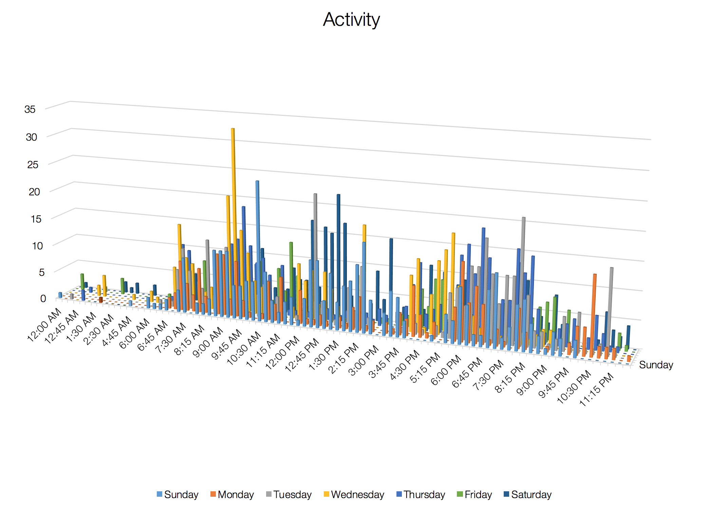 | 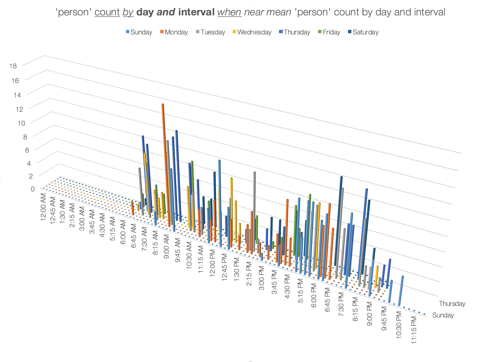 |
 |
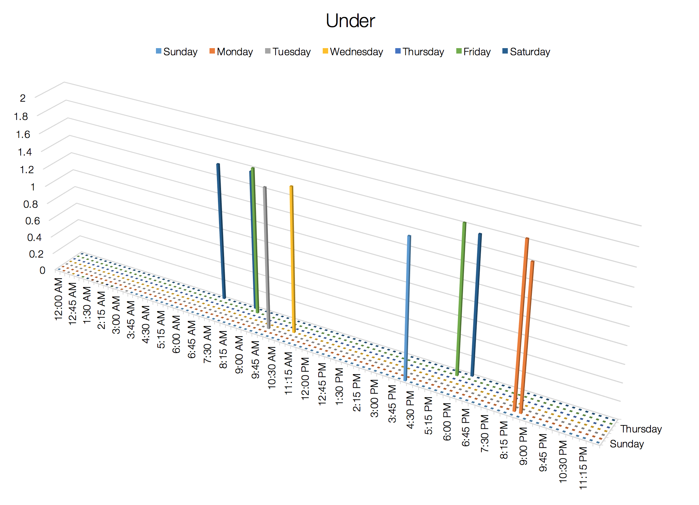 |
Below are some examples of the aah-stats Web service:
aah-stats?db=rough-fog&id=person
aah-stats?db=rough-fog&id=person&day=all
aah-stats?db=rough-fog&id=person&interval=all
aah-classifiers
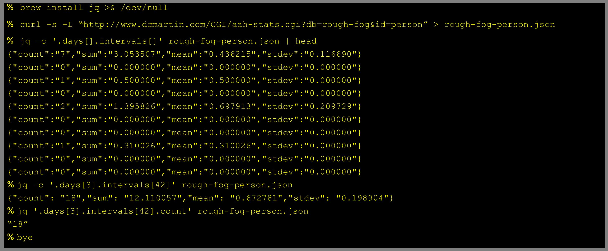
This information is consumed by the RaspberryPi and utilized to compare current events with the historical population statistics.
Local conditional testing is currently in-progress, utilizing the motion package capability for additional event processing.
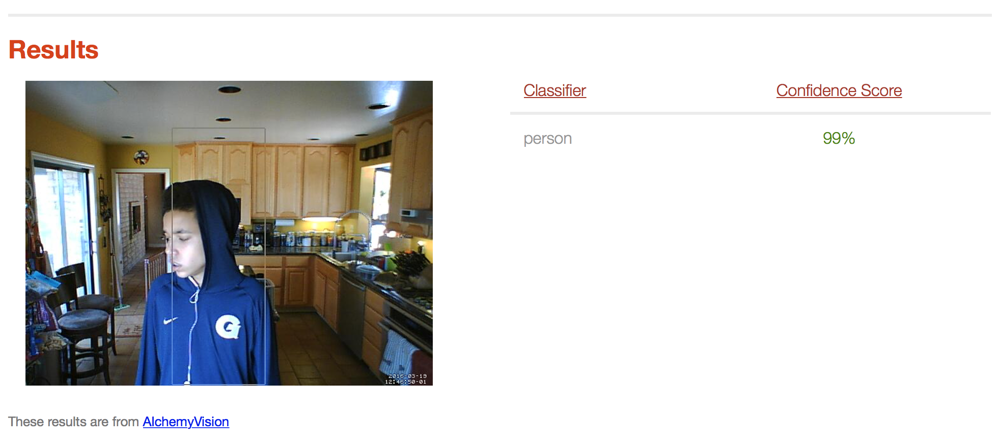


Installation on kitchen shelf
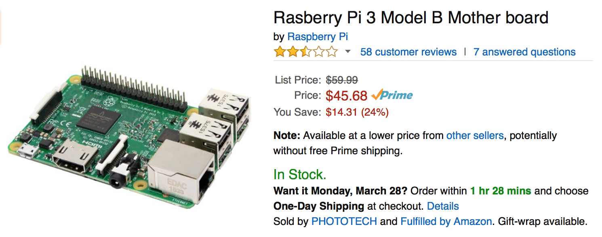


The resin.io service provides a customizable base image with which to "flash" the uSD card for the RaspberryPi. The image may be configured with the SSID and password for the local WiFi network.
The "AgeAtHome" application we have defined provides a context in which devices participate. Each device is assigned to one application. Once a device has been flashed and booted, it connects to the resin.io service and presents itself within the application context.
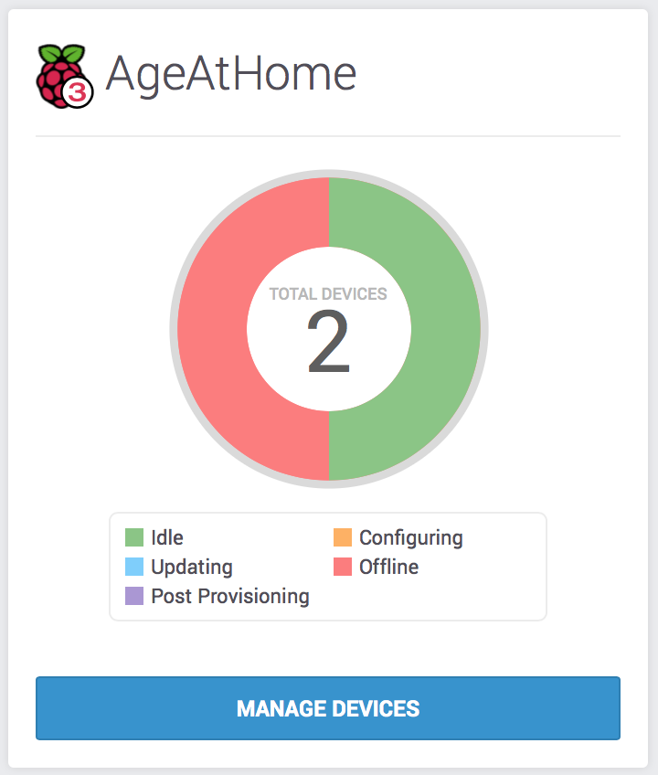
Each device associated with the application can be inspected, including summary status and logs (e.g. stderr).
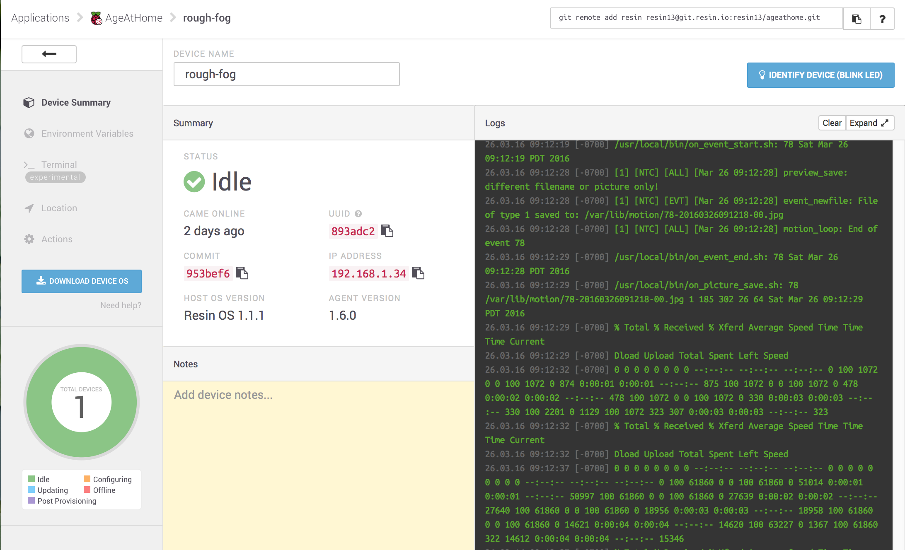
Including the ability to ssh(1) into a terminal for command line interface:
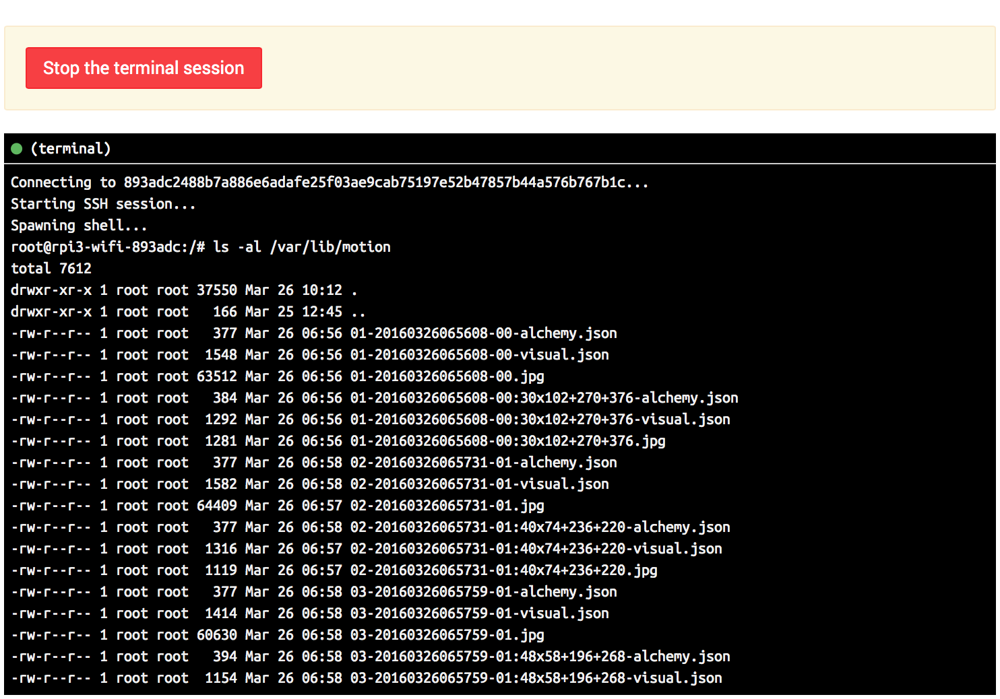
Listing of motion detection volume data in file system
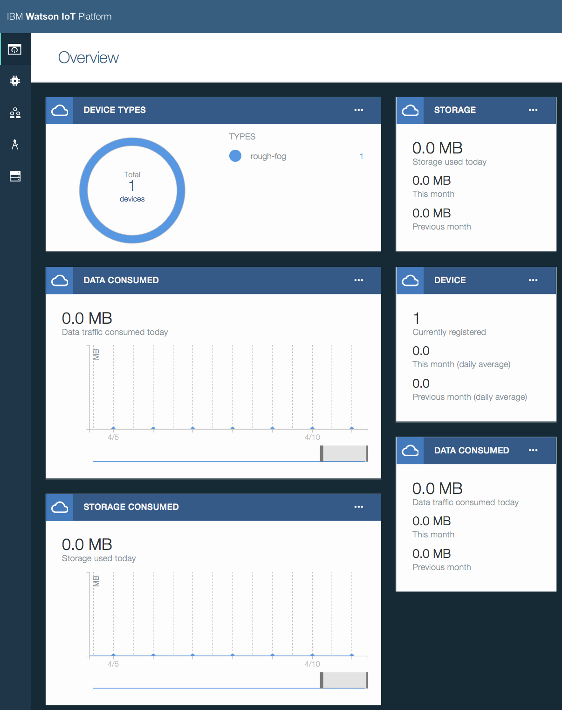
IBM IoTF Platform Dashboard
Changes were made to both Dockerfile as well as initial script to enable IoTF/QS and sample C program only sends system status. Will need to change the sample program to progres HTTP requests to send any JSON payloads (i.e. our events).
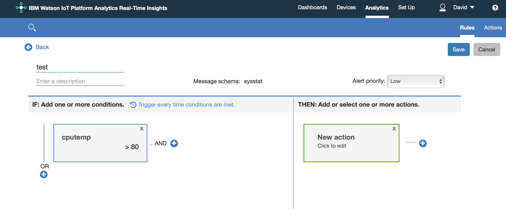
IBM IOTF Real-time Insights rule specification
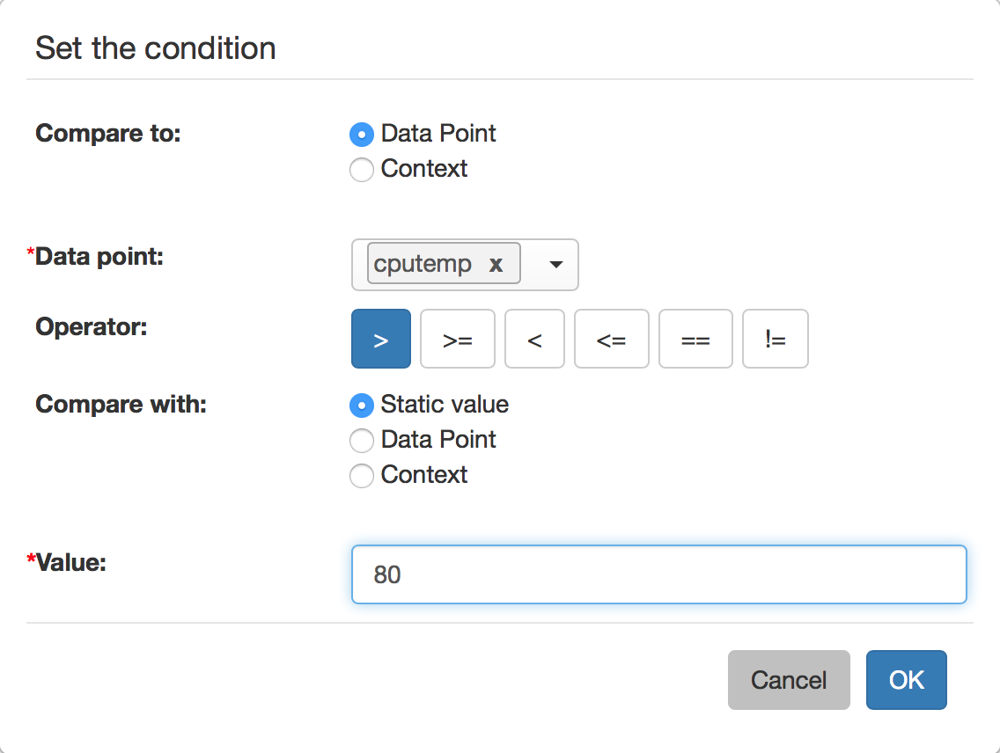
IBM IOTF Real-time Insights rule condition specification
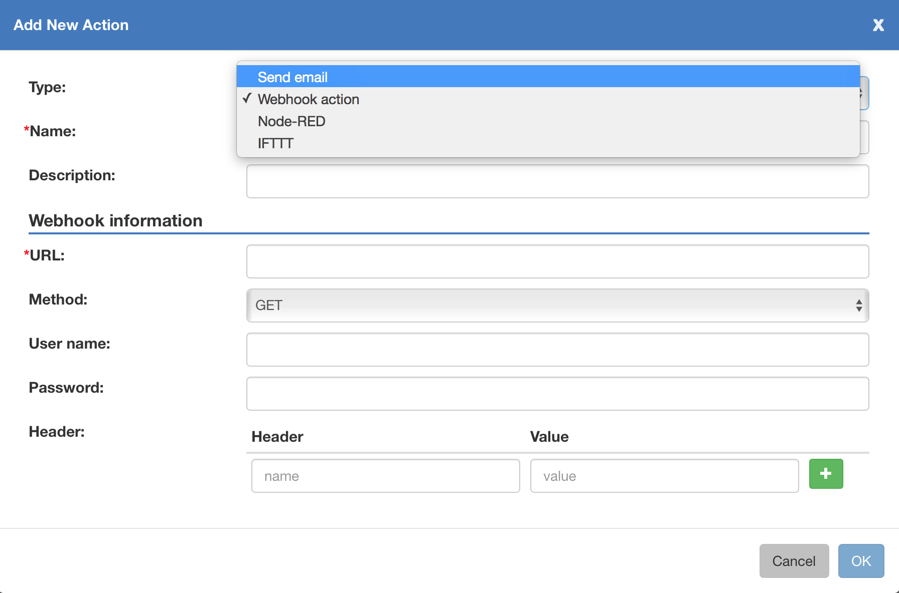
IBM IOTF Real-time Insights rule action specification
The following image is a more detailed diagram of the system operational components and process.
GitHub repositories are publically accessible at:
SETUP (in-progress):
If you've read all the way to here and you still want more information, you can find me at the following places; or click on the little blue circle in the lower right of your web browser to talk to me directly: LinkedIn GitHub Twitter
{kind=link}
{kind=link}
{kind=link}
{kind=link}